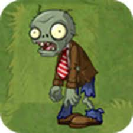
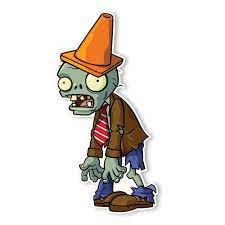
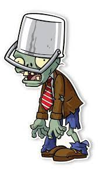
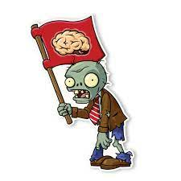

Los zombies son nuestros enemigos a quienes no debemos dejar entrar a nuestra casa y es por eso que usamos a nuestras plantas para defenderos ya que estos tipos tratarán de entrar por cualquier medio y harán hasta lo imposible por lograrlo.
A continuación se presentan una descripción de los zombies básicos del juego.
| Zombie |
|  |
| Velocidad: básico Dureza: baja |
Los zombies normales son el primer tipo de zombie con el que nos encontramos al empezar a jugar, son débiles con un total de 10 impactos de guisantes para destruirlo. |
| Zombie caracono |
|  |
| Velocidad: básico Dureza: protegido |
El Zombie caracono es otro de los zombies más comunes que nos podemos encontrar dentro de una partida. Se caracteriza por poseer en su cabeza un cono de tránsito y posee un poco más de dureza que el Básico, aunque es bastante fácil de derrotar. |
| Zombie caracubo |
|  |
| Velocidad: básico Dureza: reforzado |
Este zombie es un poco más fuerte que los demás debido a que lleva en su cabeza una cubeta de metal lo que lo hace resistente a los ataques. Pero, comparándolo con otros zombies más fuertes, este se vuelve débil. |
| Zombie abanderado |
|  |
| Velocidad: básico Dureza: baja |
Este es un zombie muy particular ya que éste nos avisa cuando viene una oleada de zombies. Es prácticamente un zombie común lo único que lo diferencia es que lleva una bandera la cual puede variar en distintos mundos pero presenta el mismo logotipo (un cerebro). |